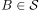
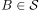
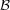
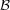
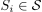
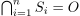
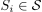
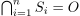
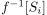
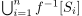

Urbild der Subbasis unter stetiger Abbildung
1. Satz
Seien  und
und  topologische Räume und
topologische Räume und  eine Abbildung.
Dann sind folgende Aussagen äquivalent:
eine Abbildung.
Dann sind folgende Aussagen äquivalent:
 ist
ist  mit  gilt, dass
mit  gilt, dass 2. Beweis
 das
das  Analog auch für 
Analog auch für 
2.2. b)
Für  existieren nach Annahme endlich viele  mit .
Ferner folgt wegen der Eindeutigkeit einer Abbildung
existieren nach Annahme endlich viele  mit .
Ferner folgt wegen der Eindeutigkeit einer Abbildung
 1
1
Da Nach Annahme ist  offen und wegen der Abgeschlossenheit gegenüber endlichen Schnitten (Topologie) damit auch dann . Daraus folgt die Stetigkeit
2.3. c)
folgt aus Basis as Subbase (topology)